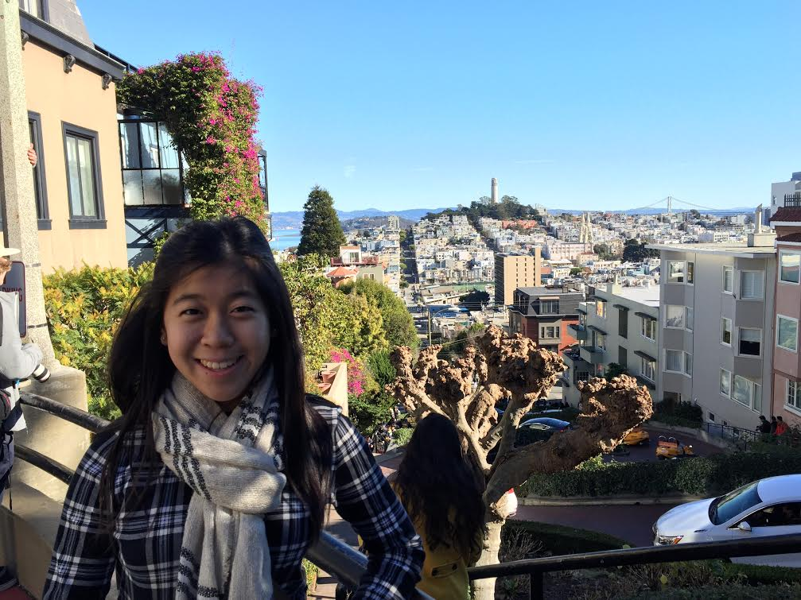

Hello! I'm Kelly Pang! Welcome to my bio page!
Introduction: I am a senior (finally!) at Ayala High School. Hobbies: At school, I am part of a community organization called One Harmony. I have a passion for One Harmony because it warms my heart when we perform for and talk to senior citizens in the audience at the nursing home; not to mention, it's always fun to perform with my friends. It's another platform for me to display my piano-playing skills, which I have been practicing for 9 years! Furthermore, I am part of National Math Honor Society, where I compete in math competitions that are so difficult that they almost seem fun. At home, I love to bake banana bread and carrot cake, build puzzles (expecially Disney ones), and play with my two dogs! Also, I like to kayak, swim (for the school team), go to the beach, online shop, and hike with my mom. Academic Interests: I love learning the Chinese language and culture, the ins and outs of Chemistry (as well as other science-related things), and currently, I'm having fun with Computer Science and English Literature!
My 6-second Halloween-theme Rube Goldberg that ends with the lighting of a cool bat-shaped circuit is pretty cool. Not really.